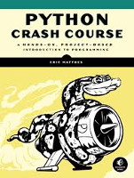

This is a collection of resources for Python Crash Course, an introductory programming book from No Starch Press by Eric Matthes.
If you have any questions about Python Crash Course, feel free to get in touch:
Email: ehmatthes@gmail.com
Twitter: @ehmatthes
Here you can find instructions for:
The simplest way to get the online resources for the book is to click on the Download .zip button at the top of this page, which will download the source code files and other resources for the entire book.
Cheat sheets can be really helpful when you're working on a set of programming exercises or a project. This set of cheat sheets will help remind you of the concepts you're learning, as well as the Python syntax for these concepts.
Some of the libraries featured in the book have been updated recently, which is a good thing - it means you're learning to use Python packages that are steadily being improved.
When packages are updated you have the option of using the version that was featured in the book, which lets you run code exactly as it's written in the book. You can also choose to install the latest version of each package, and modify the code in the book slightly. Each approach is outlined clearly in these updates.
A list of updates is kept here.
Solutions are available to selected exercises. Be careful about looking at the solutions too quickly; make sure you've given yourself time to wrestle with the concepts you just learned before looking at a solution. Also, there are several ways to solve most of the exercises, and the solutions only show one possible way to complete each exercise.
You can get to each chapter's solutions from here.
Available from No Starch Press and Amazon.